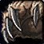

Talentos · WoW Forever
Talentos do WoW Forever: builds de todas as classes
As builds de talento das 9 classes e 27 especializações do Forever, pra upar do 1 ao 60, raide, masmorra e PvP. Clique na build e ela abre pronta no calculador do Wowhead.
- O Forever mudou muitos talentos em relação ao Classic: build do Classic original não serve. Na página de cada classe tem o que mudou.
- As builds de raide ainda são estimativa: as raides abrem em 09/12/2026 e os guias devem mudar depois disso.
- Raça nova no Forever: Skyborne (Horda: Druida, Caçador, Ladino, Xamã e Guerreiro; Aliança: Druida, Caçador, Mago, Ladino e Guerreiro). Combinações novas: Orc Mago, Troll Bruxo, Morto-vivo Paladino, Humano Caçador, Gnomo Sacerdote e Anão Xamã.
Pular para: Druida · Caçador · Mago · Paladino · Sacerdote · Ladino · Xamã · Bruxo · Guerreiro

DruidaVer detalhes e o que mudou Caçador
Caçador
Ver detalhes e o que mudou Paladino
Paladino
Ver detalhes e o que mudouSacerdote
Ver detalhes e o que mudou Guerreiro
Guerreiro
Ver detalhes e o que mudouFonte: guias de talentos e de upar do Wowhead para o WoW Forever (patch 1.60.1, editados entre 04/11 e 26/11/2026) e notas de desenvolvimento da Blizzard. O O MURLOC organiza e traduz; as builds são dos guias citados.